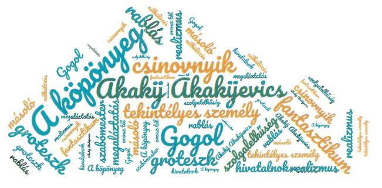

Az orosz realizmus történelmi, művelődéstörténeti háttere
FELELETVÁZLAT
- Sajátos kettősség a 19. század második felének orosz társadalmában: a polgárosodás jelei, nagyvárosi lét – merev, feudális hierarchia a rendszerben és a lelkekben.
- Kiemelt téma: felesleges, öncélú, személytelen és embertelen hivatalnokrendszer → csinovnyik (hivatalnok – önmagán túlmutató jelentésben).
- A realizmus mint ábrázolásmód elterjedése és átalakulása.
- Gogol jelentősége: „Mindannyian Gogol köpönyegéből bújtunk elő.” (Dosztojevszkij).
A köpönyeg
- Műfaj: (hosszabb) elbeszélés.
- Téma: kritika a korabeli orosz társadalomról, ahol egy élet egy köpönyeget ér, ahol nincsenek személyiségek, csak rangok és beosztások.
- Szerkezet: lineáris → a végén csattanó, amely a realitás szférájából átlép a fantasztikuméba.
- Látszólag mindentudó elbeszélő → mindent tud a múltról és jelenről, ismeri a szereplők gondolatait is, ugyanakkor időnként kifejezetten felhívja a figyelmet saját tudásának a korlátaira, emlékezete megbízhatatlanságára. Előfordul, hogy megszólítja, majd szándékosan félrevezeti az olvasót → homályban tart fontosnak tűnő részleteket, de a kevésbé lényeges dolgokról hosszan beszél.
- Előadásmódja az élőbeszédet utánozza (gyakran kerülnek előtérbe az ő gondolatai, még a cselekményt is háttérbe szorítva).
Szereplők
Akakij Akakijevics
- A tipikus csinovnyik kegyetlenül őszinte bemutatása → Akakij Akakijevics Basmacskin egy pétervári hivatalnok, aki egész nap iratokat másol. Összetettebb feladatok ellátására alkalmatlan, de pontos és elégedett, munkája egész lényét kitölti.
- Új célja lesz azonban az életének, amikor az orosz tél keménysége arra készteti, hogy öreg, elnyűtt köpönyege helyett újat varrasson → a „jövőbeni köpeny örök ideája” → valójában kisszerű cél → komikus hatás.
- Majdnem egy évig spórol az új ruhára, de miután elkészül, útonállók elrabolják a köpönyegét → feljelentések, megaláztatások sorozata után ágynak esik és meghal → mély részvét, megrendültség az olvasóban → tragikus.
- Akakij Akakijevics ábrázolását groteszk kettősség jellemzi, alakja egyszerre nevetséges és szívszorítóan szánalmas, amit Gogol a túlzás eszközével ér el: neve, származása, külseje, lélekölő munkája, kicsinyes élete, kollégái heccelődése egyenként nevetséges hatást vált ki, ám mindez együtt már szánalmat kelt.
- Zárlat: fantasztikum → Akakij Akakijevics a halála után kísértetként visszajár a túlvilágról, és „rangra és címre való tekintet nélkül mindenkiről leráncigál mindenféle köpönyeget”. Teszi ezt mindaddig, amíg az őt megszégyenítő tekintélyes személyét is sikerül elrabolnia → írói könyörületesség vagy keserű kiábrándultság (mert az igazságszolgáltatás, a jóvátétel csak a fantasztikum világában lehetséges).
Hivatalnokok
- Társai egy embertelen hatalmi-hivatali gépezet részei – ennek megfelelő mentalitással.
- Kiemelt szereplő: „tekintélyes személy”
- Jól megrajzolt karakter.
- A tipizálás módszere:
- neki is természetes a hivatalnokrendszer hierarchizáltsága;
- élete a hivatal;
- még nevet sem ad neki az író (abszolút tipizálás);
- szerepet játszik, nincsenek személyes vonásai.
- Szerepe:
- a reális térben: a vele való szembekerülés ingatta meg Akakij Akakijevics csinovnyik létének értelmét;
- az irreális térben: neki „köszönhető” Akakij Akakijevics emberi méltóságának visszaállítása.
- Kiemelt szereplő: „tekintélyes személy”
